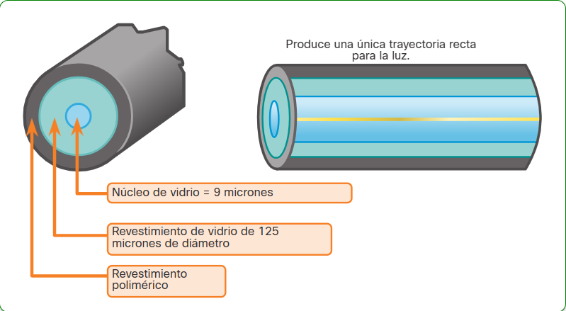
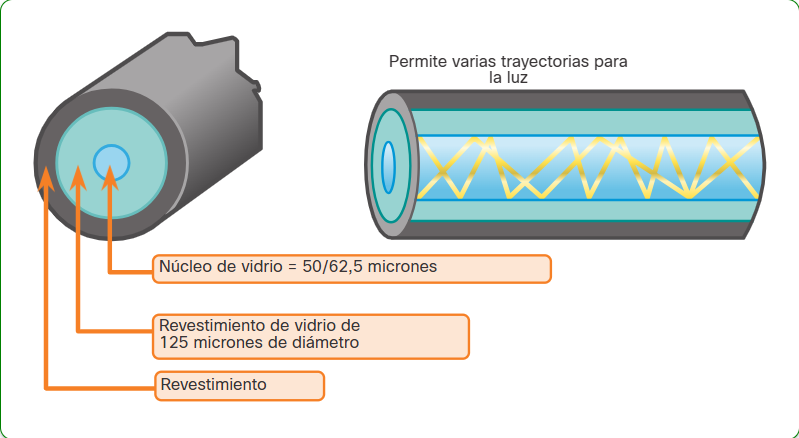

2.1. Elementos de la capa física
Cableado
- UTP (Unshielded Twisted Pair)
Consta de 4 pares, cada par trenzado y sin protección frente a interferencias (EMI, RFI). Se trenzan para anular los campos magnéticos y evitar el crosstalk (interferencia producida por un cable cercano).Conector RJ45
- Ventajas: Económico, flexible.
- Inconvenientes: No está protegido, sufre de atenuación (100m).
- FTP (Foiled Twisted Pair)
Consta de 4 pares trenzados y el cable protegido por un papel de aluminio. Conector RJ49
- Ventajas: Protegido frente interferencias EXTERNAS.
- Inconvenientes: Menos económico que el UTP, menos flexible que el UTP, sufre de atenuación (100m).
- STP (Shielded Twisted Pair)
Consta de 4 pares, cada par trenzado y cada par protegido. Conector RJ49
- Ventajas: Protegido frente interferencias EXTERNAS e INTERNAS .
- Inconvenientes: Menos económico que el FTP, menos flexible que el FTP, sufre de atenuación (100m).
- Tipos de conexiones
- Recto o Straight through (imagen conexion recta)
- Rollover o transpuesto (imagen transpuesto)
- Cruzado o crossover (imagen cruzado)
PC ----> Switch
Switch ----> Router
PC (serie) ----> Switch (consola)
Switch (serie) ----> Router (consola)
Router ----> Router
PC ----> PC
Switch ----> Switch
PC ----> Router
Radioenlaces
-
WiFi (IEEE 802.11) o WLAN
Permite conexión inalámbrica entre dispositivos y un Access Point o router.
Protocolo: CSMA/CA.
El área de cobertura depende de la potencia de emisión y la ubicación del dispositivo emisor.
Topologías WiFi:
- IBSS (Independent Basic Service Set) (imagen ibss)
- BSS (Basic Service Set) (imagen bss)
- ESS (Extended Service Set) (imagen ess)
- Repetidor Wireless (imagen Repetidor)
-
Bluetooth o WPAN (IEEE 802.15)
Conexión inalámbrica con un alcance máximo de 10 m. Trabaja en la banda de 2.4 GHz.
-
WiMAX (IEEE 802.16)
Comunicación por radioenlace de microondas, ideal para zonas rurales. Alcance: 50 a 100 km.
- Ventajas: Sortear topografía compleja.
- Inconvenientes: Afectado por fenómenos climáticos adversos.
-
Satélite
- Ventajas: Cobertura amplia, ancho de banda elevado, coste independiente de la distancia.
- Inconvenientes: Costoso, afectado por fenómenos atmosféricos.
Fibra óptica
La fibra óptica es un "cable" por el cual se transmite luz en vez de electricidad, estos cables están hechos de fibras de vidrio revestidos con kevlar.
-
Monomodo
La SMF transporta un haz de luz que viaja en linea recta emitido por una tecnologia láser.
Viaja a una distancia de 100km

-
Multimodo (MMF)
La MMF transporta multiples haces de luz rebotando en las paredes emitidos por un led.
Viaja a una distancia de unos 600m

-
Ventajas:
- Permite velocidades de transmisión elevadas
- Permite cubrir distancias mayores porque hay poca atenuación (en los empalmes y conectores es donde más perdida de potencia hay).
- Es inmune a las interferencias (EMI y RFI)
- No le afecta la corrosión.
-
Inconvenientes:
- Infraestructura cara.
- Al ser de vidrio es frágil.
- Dificil de manipular (hacer empalmes, conectores...)
- FTTH
- HFC
- Redes empresariales (adif...)
- Cables submarinos Mapa de los cables submarinos
- Cables terrestres
- Straight Tip (ST). El conector es de bayoneta/enroscable.
- Suscriptor Conector (SC). El conector es cuadrado, es LAN y WAN
- Lucent Conector (LC) simplex y duplex
Patch-panel
Es un dispositivo que organiza el cableado de una red su principal función es actuar como un punto de conexión central para cables que provienen de diferentes dispositivos (como ordenadores, impresoras o cámaras de red) y los conecta con switches, routers u otros equipos de red.Hub
Es un repetidor multipuerto. Repite la señal por todos los puertos menos por el que ha entrado. Crea trafico innecesario, genera problemas de seguridad al poder capturar tramas.Enlace al titulo